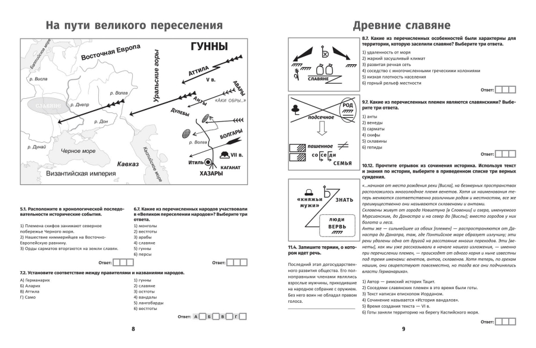

Программа обучения
Наши курсы охватывают широкий спектр исторических тем, от древних цивилизаций до современной истории. Программа разработана таким образом, чтобы углубить знания учащихся в ключевых исторических эпохах, событиях и фигурах, при этом развивая навыки критического мышления и анализа исторических источников.
Контакты и карта
Адрес: г. Москва, ул. Историческая, д. 1
Телефон: +7 (495) 123-45-67
Email: info@ivanovschool.ru
Дополнительные материалы для изучения истории
Полезные ресурсы для глубокого погружения в изучение истории:
- Ссылка на сайт: Инфоурок
- Текстовый материал: Одним из ключевых событий в истории древней Руси является призвание варягов, которое, согласно летописям, произошло в IX веке. Варяги, скандинавские воины, были приглашены восточнославянскими племенами для установления порядка и управления территориями, что способствовало объединению разрозненных земель в единое государство. Этот период заложил основы для формирования Киевской Руси, первого восточнославянского государства, и начала Рюриковичей, династии, которая правила Русью на протяжении многих веков.
- Графический материал: 
Видеоролики для обучения: